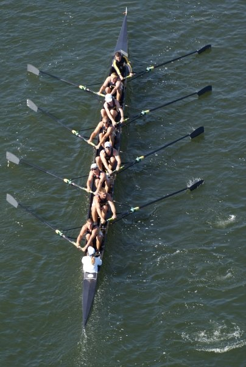
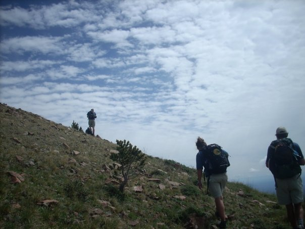
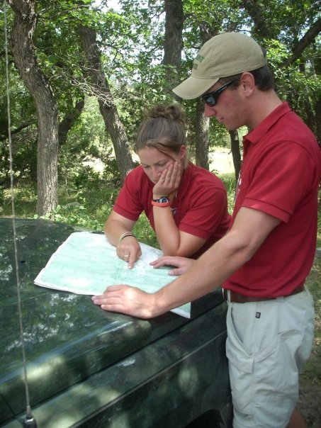
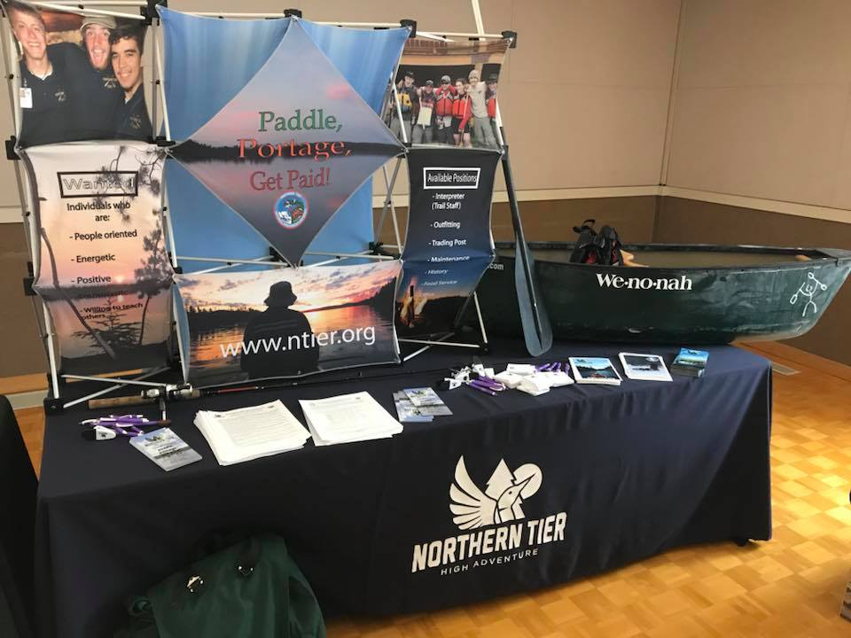

About Alex Klausing
Nonprofit Manager. Program Specialist. Leadership.
Alex Klausing has been in the camping and outdoor industry since working his first season on a summer camp staff in 2003 and continued through 2010. From 2010 to 2020, Alex served as a full-time professional with the Boy Scouts of America. He focused his career on program and outdoor adventure. He has a proven record of success in all non-profit operations functions, including volunteer recruitment, fundraising, and board engagement.
Some of his notable assignments and positions include serving as the Camp Director of Camp Crooked Creek (Shepherdsville, Kentucky), Training Director and Day Camp staff advisor with the Lincoln Heritage Council (Louisville, Kentucky), Associate Director of Program at Northern Tier National High Adventure Base (Ely, Minnesota), and Program Director of the Three Fires Council (St. Charles, Illinois).
Professional Activities

Collegiate Athlete | Murray State Rowing (4 Years)

Outdoor Adventure & Exploration

Program Planning & Strategy

Membership Recruitment & Engagement
Ready to work together?
I'm always open to discussing new opportunities and how my experience can help your organization grow.